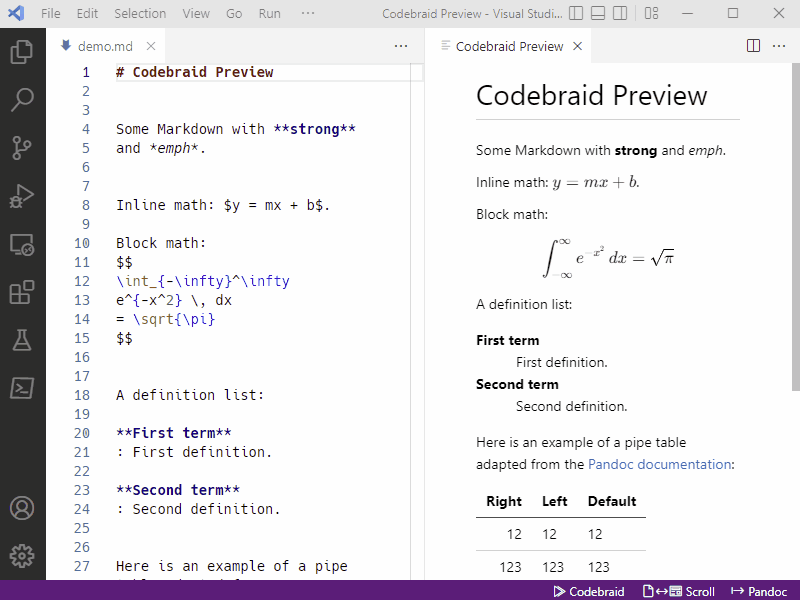

Export with Pandoc
To export documents with Pandoc, click on the “Pandoc” button in the status
bar (bottom right), then enter a file name in the file dialog that opens and
save. Or select the Export document with Pandoc command from the
Command Palette (Ctrl+Shift+P). The format of the exported document
is inferred from the file extension.

Currently, there is no support for customizing the exported document. An
upcoming release is expected to add export customization through the
_codebraid_preview.yaml file and perhaps other means.